Wyobraź sobie poranki, kiedy promienie słońca wpadają do salonu, a Ty w ciszy pijesz kawę na przestronnym tarasie, otoczony zielenią i spokojem. Wieczorem, po pracy, czeka na Ciebie prywatna sauna, kieliszek wina z własnej chłodziarki i kolacja na świeżym powietrzu.
To mieszkanie nie jest zwykłym adresem na mapie Warszawy. To Twój osobisty azyl, zaprojektowany i urządzony "dla siebie" – z dbałością o każdy szczegół, jakość materiałów i wygodę codziennego życia.
---------------------------------------------------------
Opis mieszkania:
Na 75 m² znajdziesz wszystko, czego potrzebujesz, by żyć w pełnym komforcie:
Do mieszkania przynależą dwa miejsca parkingowe w garażu podziemnym oraz komórka lokatorska.
--------------------------------------------------------
Lokalizacja – Osiedle Wilno
To jedno z najbardziej kameralnych i przyjaznych osiedli na Targówku:
To miejsce, które łączy spokój podmiejskiego życia z bliskością centrum.
---------------------------------------------------------
Szczegóły techniczne
---------------------------------------------------------
Średnia cena za m² na osiedlu Wilno wynosi ok. 14 700 zł/m².
Element Wycena Ilość Wartość
Mieszkanie 14,600 75 1,095,000
Balkon 50,000 1 50,000
Taras 175,000 1 175,000
1,320,000
----------------------------------------------------------
Miejsce garażowe 40,000 2 80,000
Komórka lokatorska 15,000 1 15,000
---------------------------------------------------------
ENGLISH
---------------------------------------------------------
Imagine mornings when sunlight fills your living room, and you enjoy your coffee in peace on a spacious terrace surrounded by greenery and tranquility. In the evenings, after work, your private sauna awaits, along with a glass of wine from your own wine fridge and dinner under the open sky.
This apartment is not just another address on the map of Warsaw – it's your personal retreat, designed and furnished for yourself with attention to every detail, premium materials, and the comfort of everyday living.
---------------------------------------------------------
Property description
Within 75 m² you'll find everything you need to live in complete comfort:
The property includes two parking spaces in the underground garage and a storage unit.
----------------------------------------------------------
Location – Wilno Estate
One of the most peaceful and family-friendly residential areas in Targówek:
A place that combines the calm of suburban living with the proximity of the city center.
-----------------------------------------------------------
Technical details
-----------------------------------------------------------
Pricing context
The average price per m² in Wilno Estate is approx. 14,700 PLN/m².
Item Unit price (PLN) Quantity Value (PLN)
Apartment 14,600 75 1,095,000
Balcony 50,000 1 50,000
Terrace 175,000 1 175,000
1,320,000
Additional:
Item Unit price (PLN) Quantity Value (PLN)
Parking space 40,000 2 80,000
Storage unit 15,000 1 15,000
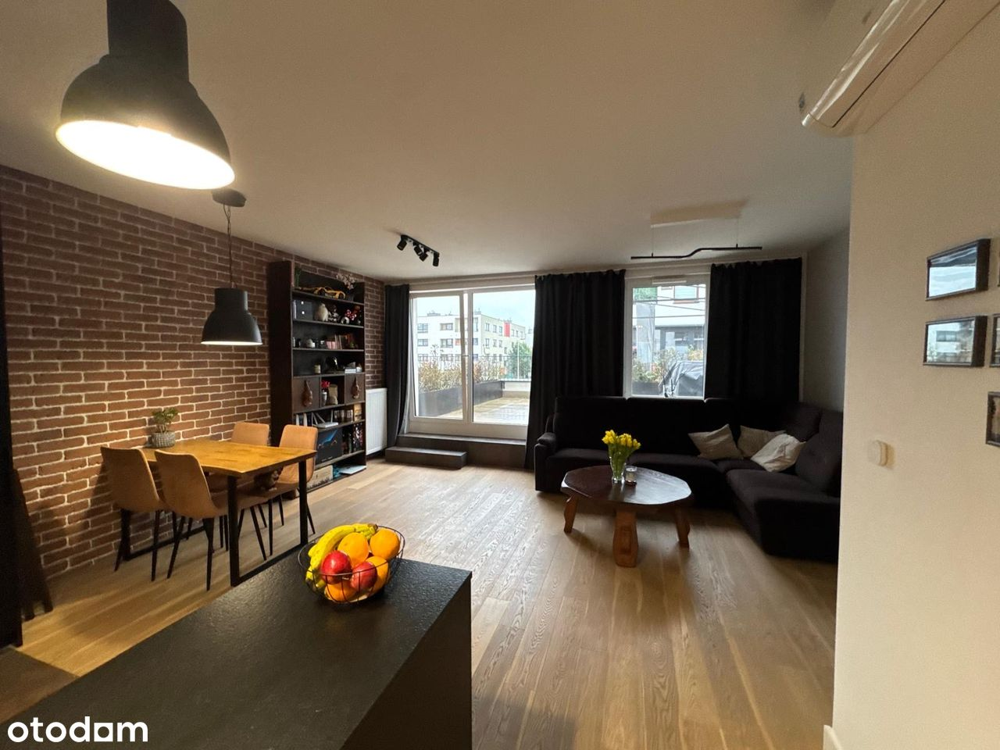

 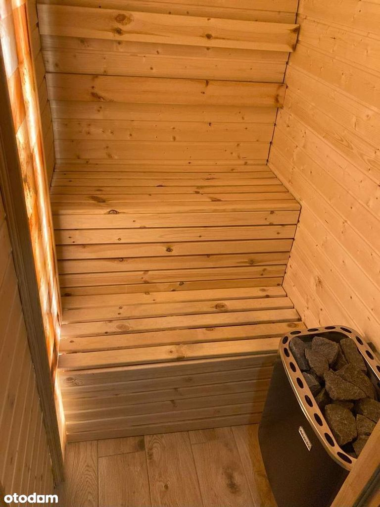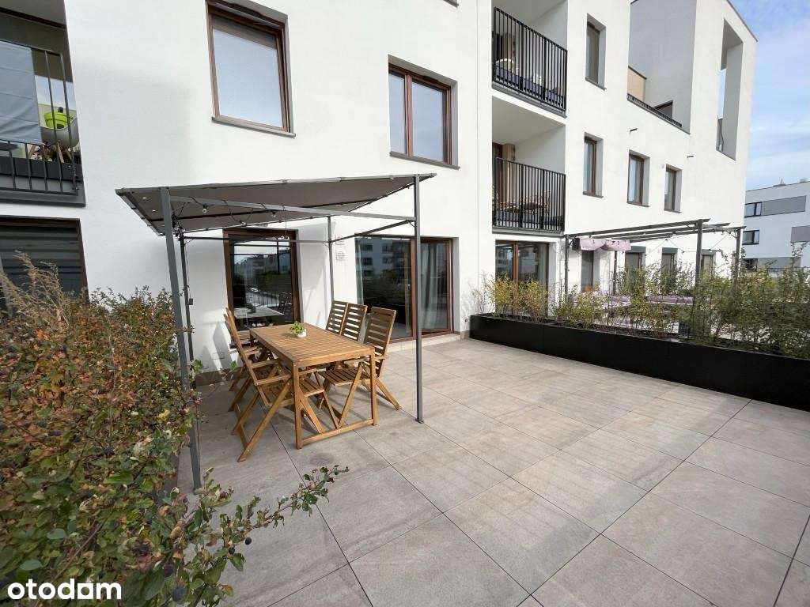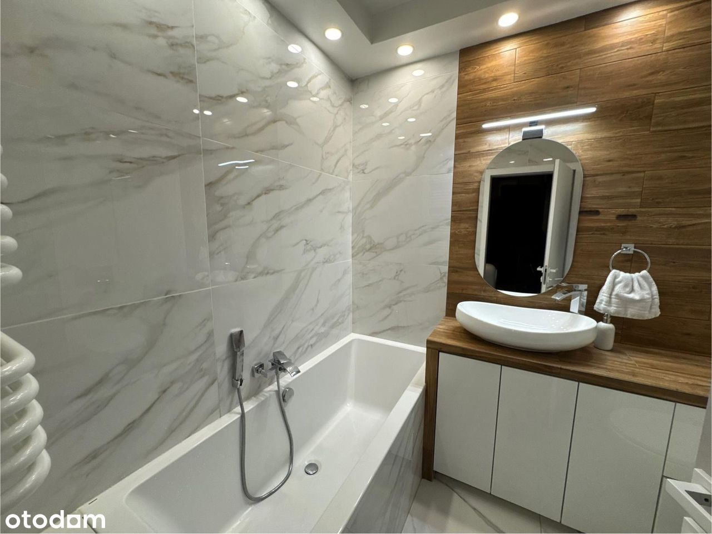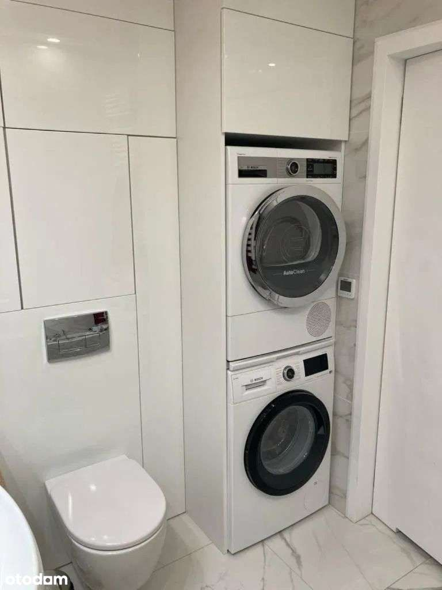
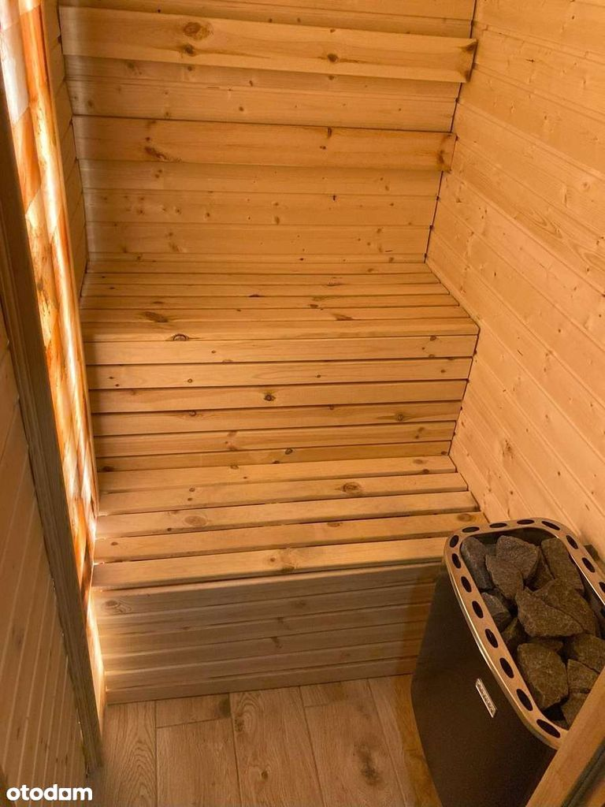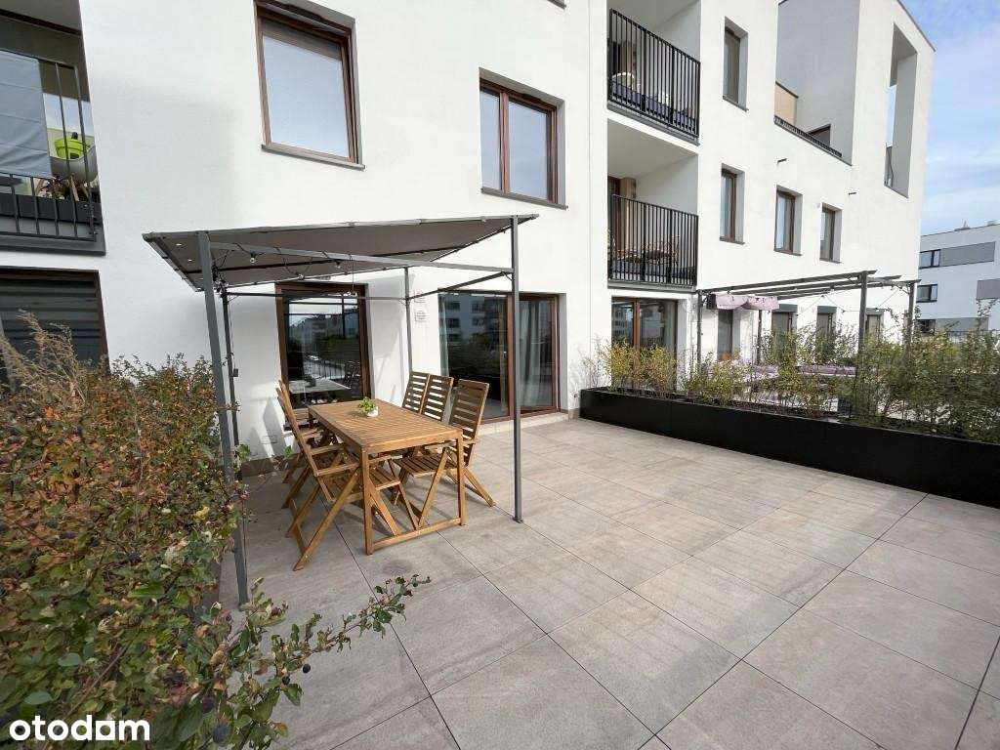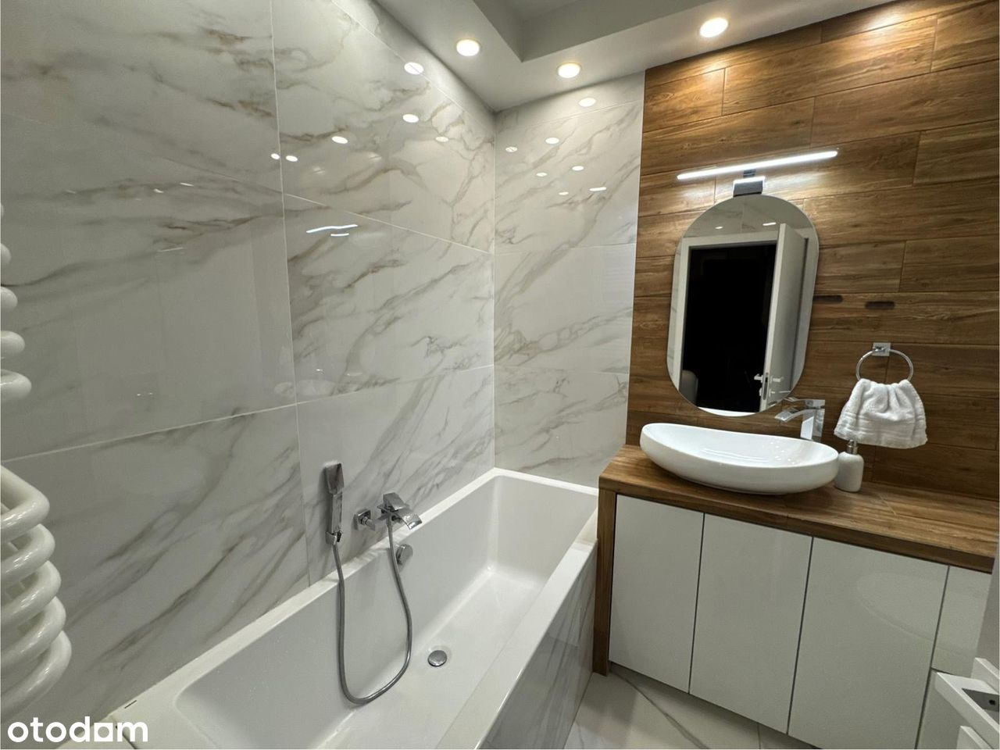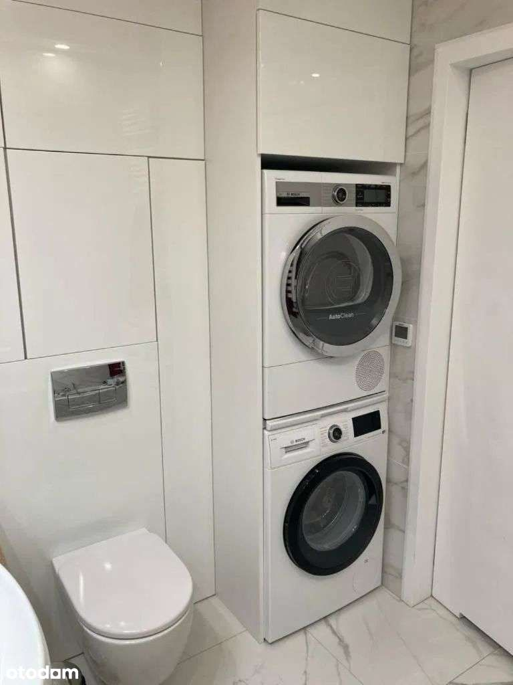
 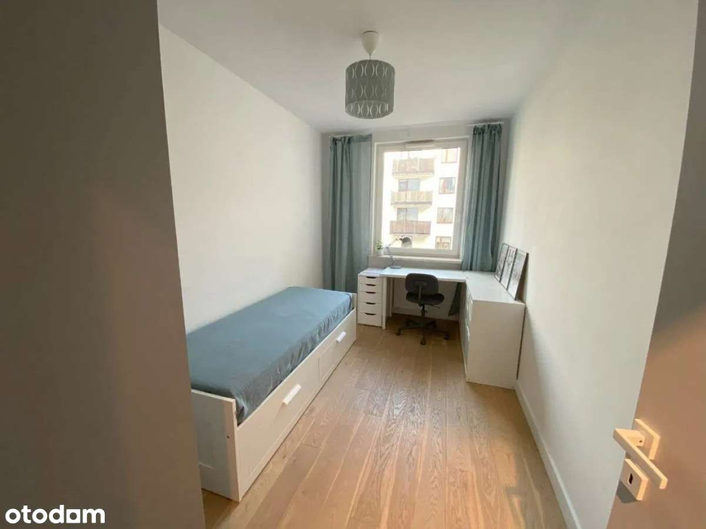
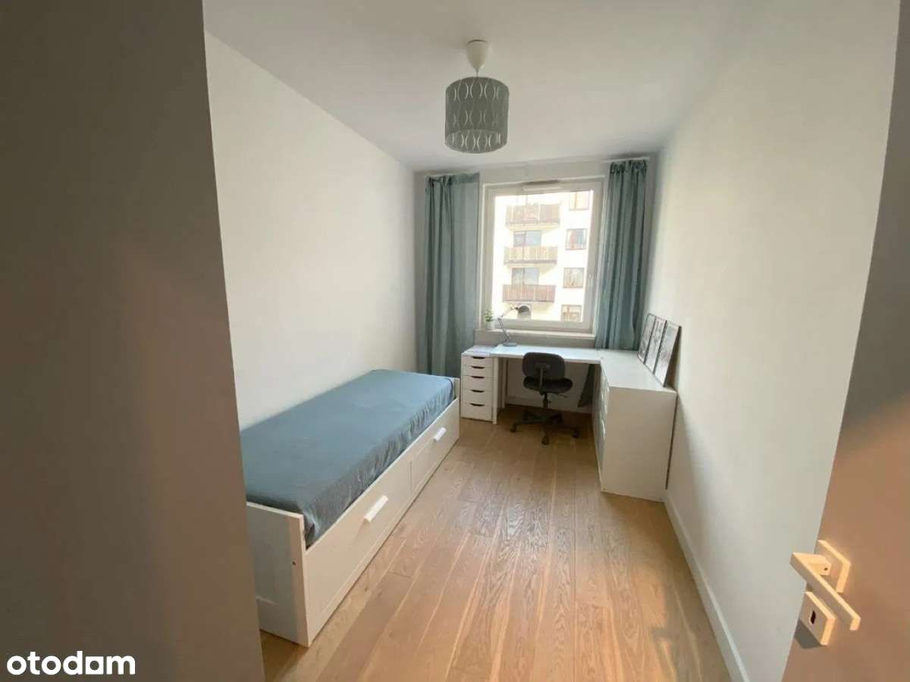

 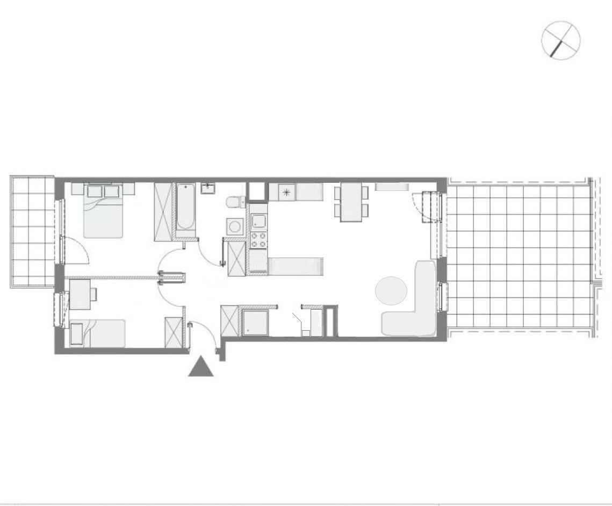
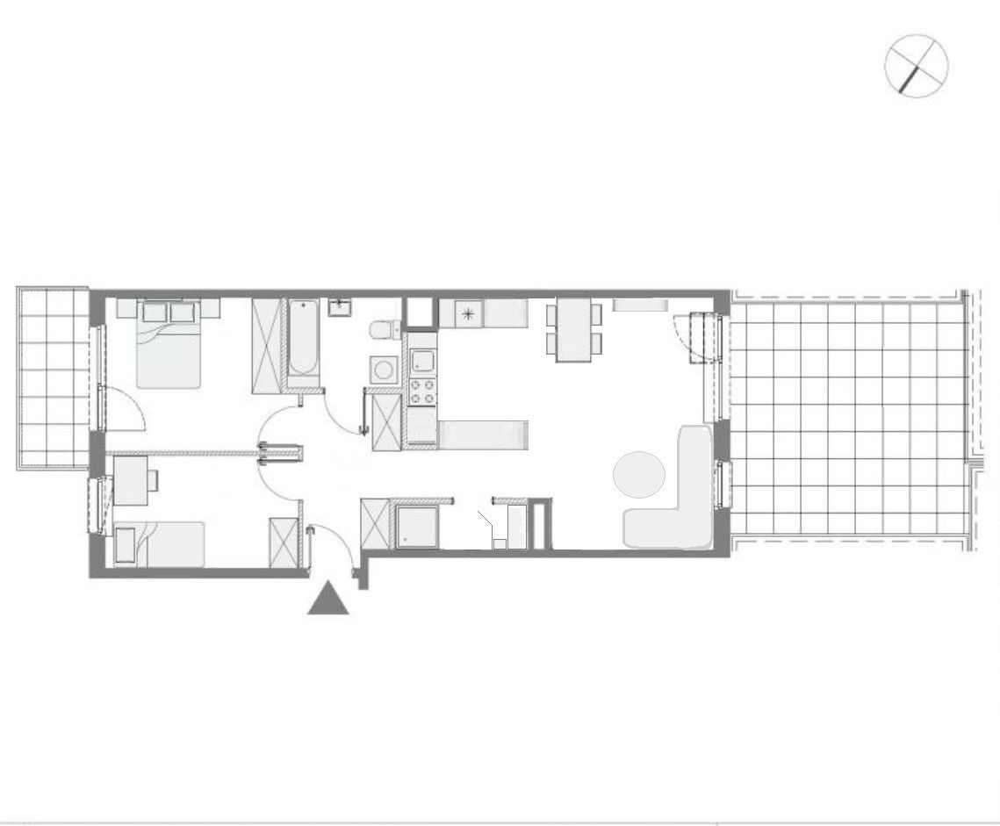